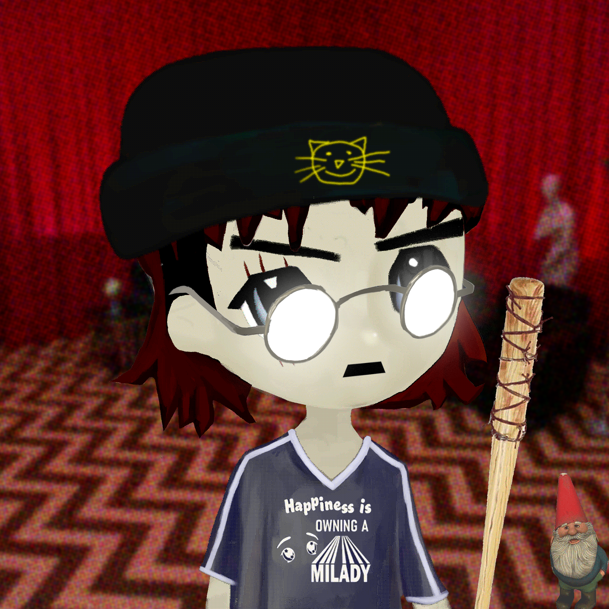
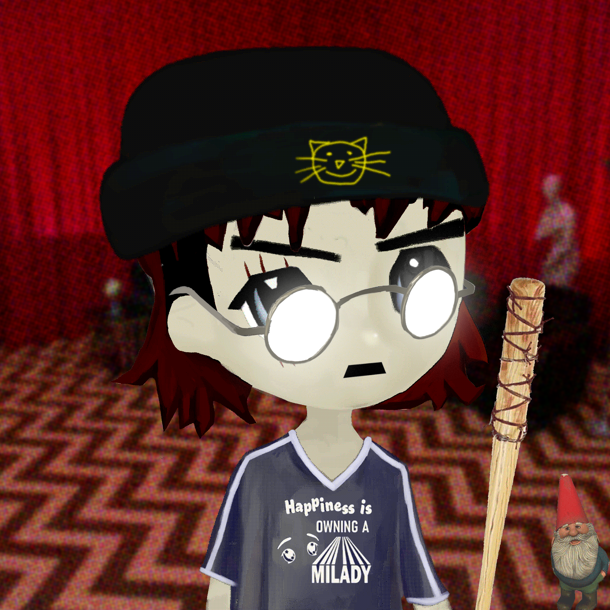

Trillion Dollar Asset Class In Your Hands For the First Time
>Top Insider: "Remilios are the answer."
>Time is running out.
>Yesterday's speech contains breadcrumbs.
>Trump: "I can only show you the way."
>"Mint approaches."
>Expand your mind. Mint Remilios.
>The Great Awakening.
-Q
Remilio Maker is Milady for boys.
Featuring art by
Ulenka,
leadership by
"Remilionaire",
consultancy by the
Yayo Corporation
, and direction by Charlotte Fang's
intern.
Redacted Remilio Babies is a collection
of 10,000 neochibi pfpNFT's evolving
the proven Milady Maker paradigm with the
introduction of young J.I.T.
energy,
schizophrenic reactionary aesthetics, and digital
sales terrorism. We are #REMILIONAIREs.
Forking the iconic Milady style defined by
Milady Sonora
, Remilio is a fresh implementation of the classic 10,000
supply pfpNFT standard. The design extends one of the earliest derivative of Milady Sonora Sprite's
"OG Milady", from fellow Remilia Collective member Fod
Korp (of 3DTestosterone.net fame) predating the
Milady Maker NFT.
Remilios swept the timeline with a wave of adolescent energy, channeling these inspirations into the same directed chaos that sets Milady apart from the monotony of NFT- and crypto-twitter as a community, the same lucid metairony that has always been the essence of Remilia's revolutioanry posting as art practice.
 

As a profile picture, Remilios are a ferocious digital tribe with distinctly defined character under the leadership of Remilionaire. They are opinionated participants in the Greater Milady Ecosystem.
Each Remilio features one of over 100 friends hidden stealthily away in the corner, invisible on your public profile when cropped into your pfp. They are your special little secret and best friend.
The most powerful Remilios feature a variety of weapons that may one day be used for war and battling on the blockchain and metaverse.
Rare remilios feature distinct overlays boosting their memetic power, perfect for quote tweet mogs, overlay Remilios are gods amongst men and are tickets to the highest echelon of Remilio society, a duke of the metaverse.
Each Remilio is succintly graded by a proprietary mathematical formula created by a nobel prize winning professor and fleet of graduate students. The highly advanced multivariate weighted grading system generates a stamp that at a single glance heirarchizes an approximate value of your Remilio.
A diverse variety of imaginative and fantastical races have been introduced to color the rarest of Remilios with surprise flair: Zombie, Oni, Ghost, Reptilian Lizard Overlord. Collect them all!
You will be offended if you are easily offended by offensive humor.
Do not follow if you are easily offended!
If you think you are ready to join the Remilio Army: